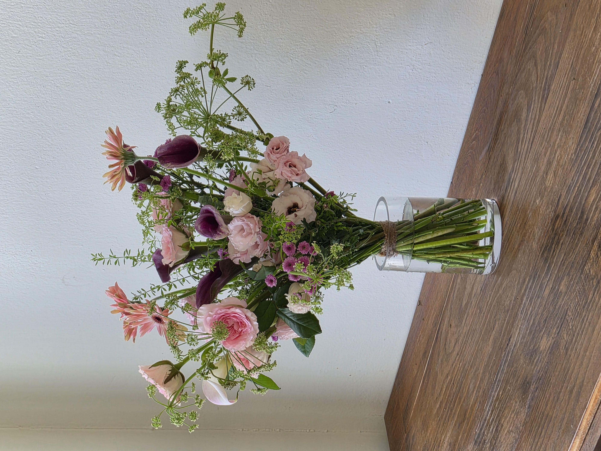

CLASS WORK · HAND-TIED
2026.08.25ROUND HAND-TIED
BOUQUET
やわらかなピンクと深い紫を重ねたラウンドブーケ
01 / CLASS WORK
CONCEPT
SOFT CONTRAST
IN A ROUND FORM.
핑크를 중심으로 아이보리와 딥 퍼플을 더해 부드러움 속에 선명한 대비를 만든 라운드 핸드타이드 부케입니다.
둥근 기본 형태를 유지하면서도 거베라와 칼라, 당근초의 길이와 방향을 살려 지나치게 단정하지 않은 자연스러운 움직임을 표현했습니다.
ピンクを中心に、アイボリーと深いパープルを重ね、やわらかさの中に印象的なコントラストを加えたラウンドブーケです。基本の丸いフォルムを保ちながら、ガーベラやカラー、レースフラワーの線を生かし、自然な動きを加えました。
COLOR PALETTE
色の構成
BLUSH,
PLUM,
GREEN.
부드러운 블러시 핑크와 아이보리를 중심으로 딥 플럼을 포인트로 사용했습니다. 그린은 서로 다른 꽃의 색과 형태를 연결하며 전체 색감을 차분하게 정리합니다.
やわらかなブラッシュピンクとアイボリーをベースに、深いプラムをアクセントとして加えました。グリーンが異なる花の色と形をつなぎ、全体の色調を落ち着かせています。
SOFT BLUSH
#E5B3BDPETAL IVORY
#EFE6DCPEACH PINK
#DFA99BDEEP PLUM
#633244BOTANICAL GREEN
#69785AMATERIALS
使用花材
겹이 풍성한 장미와 리시안셔스를 중심으로, 거베라와 칼라의 선명한 형태를 더했습니다. 당근초와 애니시다의 가벼운 선, 스프레이 소국의 작은 꽃들이 소재 사이의 공간을 자연스럽게 연결합니다.
花びらの重なりが豊かなバラとトルコキキョウを中心に、ガーベラとカラーのはっきりとしたフォルムを加えました。レースフラワーやエニシダの軽やかな線と、小さなスプレーマムが花材の間を自然につないでいます。
만다라 장미
バラ ‘マンダラ’
리시안셔스
トルコキキョウ
페사로 거베라
ガーベラ ‘ペサロ’
칼라(퍼플)
カラー（パープル）
칼라(핑크)
カラー（ピンク）
스프레이 소국
スプレーマム
애니시다
エニシダ
당근초
レースフラワー
SOFT PINK · PLUM
IVORY · GREEN
やわらかなピンクと深い紫に、
アイボリーとグリーンを重ねた配色。
COMPOSITION
構成とバランス
ROUND,
HEIGHT,
RHYTHM.
중심 소재를 둥글게 배치하고 서로 다른 높이의 꽃을 반복해 전체적으로 라운드 실루엣을 만들었습니다.
장미와 리시안셔스가 중심의 볼륨을 형성하고, 칼라와 거베라는 위쪽으로 시선을 확장합니다. 당근초와 애니시다는 외곽으로 가볍게 퍼지며 부케의 경계를 부드럽게 만듭니다.
작은 스프레이 소국을 꽃 사이에 반복해 빈 공간을 연결하고, 높이를 일정하게 맞추지 않아 기본 형태 안에서도 자연스러운 리듬이 생기도록 구성했습니다.
中心の花材を丸く配置し、高低差をつけながら全体にラウンドのシルエットをつくりました。バラとトルコキキョウで中心のボリュームをつくり、カラーとガーベラで視線を上へ広げています。レースフラワーとエニシダは外側へ軽やかに伸ばし、輪郭をやわらかく整えました。
FINAL VIEW
完成したかたち

포장을 벗겨낸 상태에서는 각각의 소재가 만드는 높이와 방향이 더욱 분명하게 드러납니다. 둥근 중심부를 기준으로 꽃과 선 소재가 여러 방향으로 퍼지며, 기본 라운드 형태 안에서도 자연스럽고 가벼운 리듬을 만들어냅니다.
ラッピングを外すと、それぞれの花材がつくる高さや方向がより明確に見えます。丸い中心部から花や線の素材がさまざまな方向へ広がり、基本のラウンドフォルムの中に自然で軽やかなリズムが生まれています。
REFLECTION
制作を振り返って
LEARN,
ADJUST,
CONNECT.
핸드타이드의 기본이 되는 스파이럴과 라운드 형태를 처음으로 집중해서 연습한 작업입니다. 핑크 계열의 꽃 사이에 깊은 퍼플을 배치하면서 색의 대비와 반복을 경험할 수 있었습니다.
선이 긴 소재를 사용하면서 꽃의 높이와 방향이 전체 실루엣에 미치는 영향도 확인했습니다. 다음 작업에서는 외곽의 높이와 간격을 조금 더 세밀하게 조절해 중심의 볼륨과 바깥쪽 선이 더욱 자연스럽게 이어지도록 구성하고자 합니다.
ハンドタイドの基本となるスパイラルとラウンドフォルムを意識して制作した最初の作品です。ピンクの花の中に深いパープルを配置することで、色のコントラストと繰り返しを学びました。また、長さのある花材を使うことで、高さや方向が全体のシルエットに与える影響も確認できました。
외곽의 높이와 간격을 조절해 더욱 안정적인 라운드 실루엣 만들기